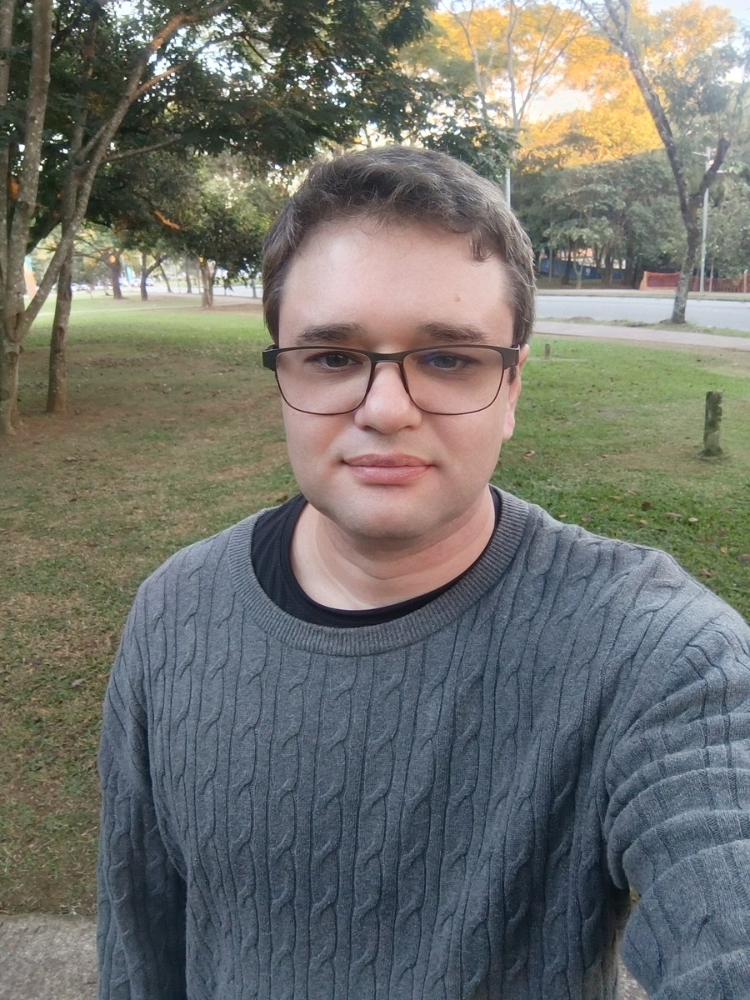
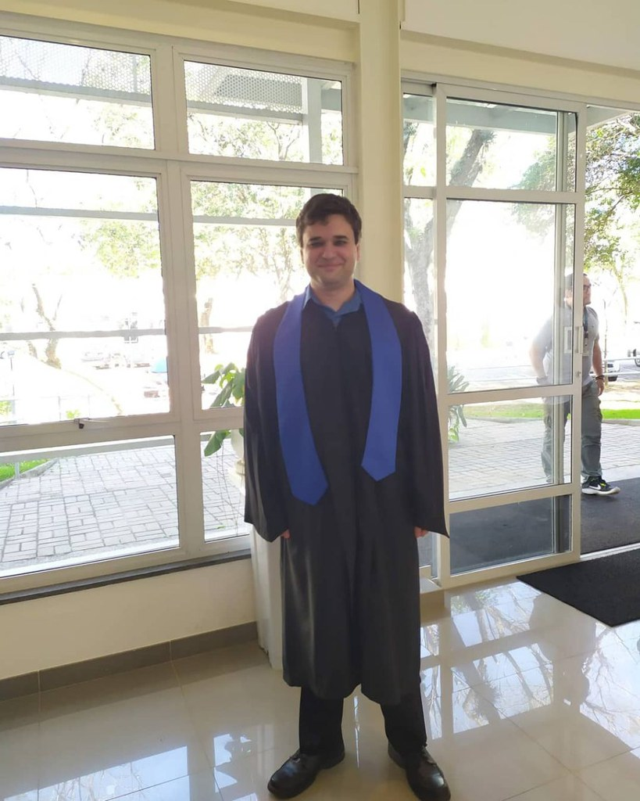
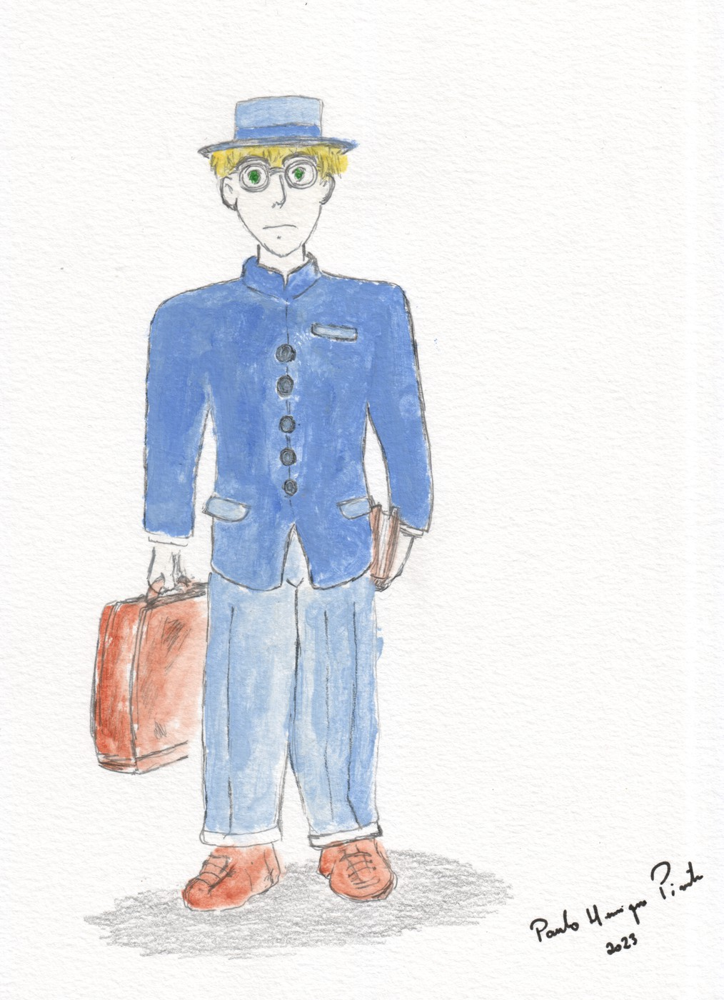
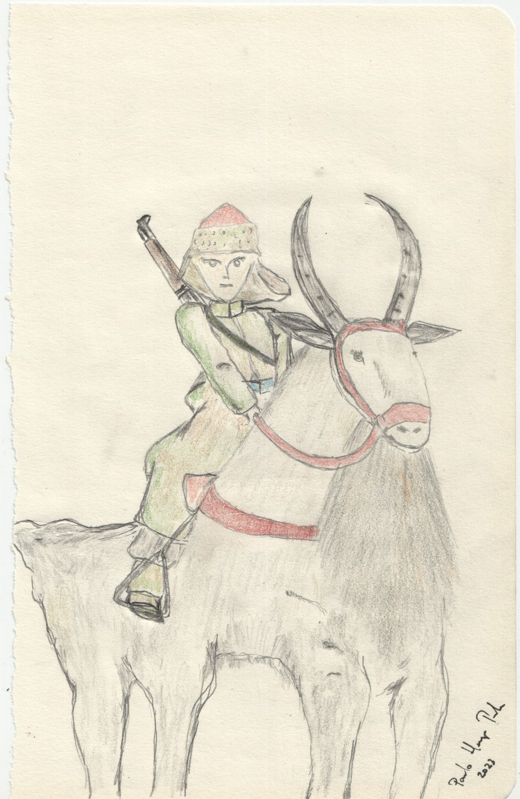

server_met
Servidor meteorológico que coleta dados GRIB e METAR (NOAA), gera mapas de variáveis meteorológicas e ambientais e produz estatísticas — usando Python, Bash e SQLite.
Ver no GitHub →Sou formado em Meteorologia pelo IAG-USP e atualmente curso mestrado na Faculdade de Medicina da Universidade de São Paulo (FMUSP) em Estatística Aplicada à Saúde, atuando com doenças renais crônicas.
Sou apaixonado por estatística, ciência de dados, R/Python, Machine Learning, Deep Learning, inteligência artificial e bancos de dados — áreas em que vivo explorando e aprendendo todos os dias.
Unindo minha base em ciências atmosféricas ao mundo dos dados, trabalho na interseção entre análise estatística, modelagem e aplicações reais — do clima à saúde.
Um pouco de quem eu sou — retratos e desenhos meus.




Servidor meteorológico que coleta dados GRIB e METAR (NOAA), gera mapas de variáveis meteorológicas e ambientais e produz estatísticas — usando Python, Bash e SQLite.
Ver no GitHub →Repositório do modelo de dispersão RLINE e do pré-processador AERMET/AERMOD, com um manual pensado para facilitar o entendimento e a execução dos modelos.
Ver no GitHub →Meus códigos de programação — coleção de scripts e experimentos em estatística, ciência de dados e programação em geral.
Ver no GitHub →Estudos com redes neurais artificiais, explorando o potencial da inteligência artificial aplicada a dados.
Ver no GitHub →